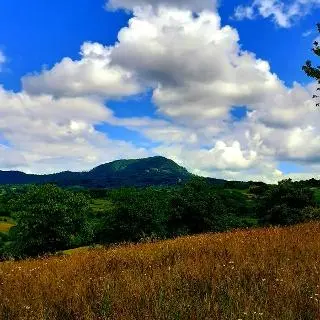
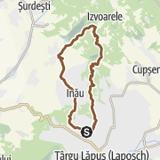
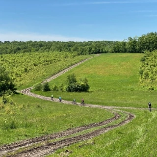
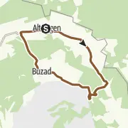

The Most Beautiful mountain biking trails in Romania


MOUNTAIN BIKING - MARAMURES
In Tara Lapusului
35.5 km
5:34 h
803 m
791 m
Traseul este la sud de Gutai, perfect pentru cei vor sa treaca in tara Maramuresului. Este traseul care se apropie cel mai mult de Creasta Cocosului, lasand deoparte drumurile intens circulate. Presarat de paduri si poieni, acesta ofera privelisti frumoase. Pentru a te bucura sa pedalezi spre poalele Crestei este nevoie sa fii un ciclist antrenat.


MOUNTAIN BIKING - BANAT
Scenic cycling tour Charlottenburg - Comeat - Buzad
28.3 km
3:00 h
284 m
288 m
The road takes us over the hills to the north of Timis County, on the border with Arad County, and offers a mix of asphalt and dirt roads along with the sounds of nature.